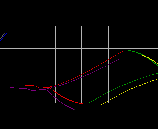

1 Introduction
This document is a user manual for version 1.0 of the XCombat visualisation system.
XCombat is an X Windows program for displaying and animating the data output from
the PACAUS and SWARMM systems. Specifically, XCombat is designed to display
an air to air combat scenario involving multiple aircraft and missiles.
The system enables the user to view the simulation from a number of different
views, including outside world views, tracking a particular aircraft
and from inside the cockpit of an aircraft.
In addition XCombat also provides
facilities to display aircraft and missile traces, radar information,
electronic warfare data, waypoints, flares, aircraft data
such as speed and altitude, a head up display, and the ability to
step through the simulation forwards and backwards, transform the scene
in various ways, scale the size of the aircraft, and to save a user's settings
1.1 Starting XCombat
The XCombat system can be started on the UNIX command line as follows:
xcombat pac.his
The file pac.his was specified above, but any file that is a valid
PACAUS or SWARMM graphics history file may be specified.
After the file is loaded, the XCombat window will appear on the screen
which will enabling the user to start viewing the run.
1.2 Command Line Arguments
XCombat has many command line arguments that enable the user to
modify how the program operates.
The command line arguments are
divided into XCombat specific arguments and those which apply
to X Windows (Xt based) programs such as XCombat. Command line
arguments may be specified as follows:
xcombat -arg1 -arg2 pac.his
1.2.1 Standard XCombat Command Line Arguments
Usage: xcombat [-runtime] [-port portnumber]
[-basicmodels] [-time start_time] [-settings settingsfile] [-path pathname]
[-view WORLDVIEW|VIEWPOINT|COCKPIT|SPOTTER] filename
| Flag | Description |
| -runtime | Sets up xcombat in runtime mode with PACAUS |
| -port | Specify a socket port eg: xcombat -runtime -port 123 |
| -basicmodels | Defaults to basic aircraft models |
| -time | Specify at what time (in seconds) the run should start |
| -settings | Specify a valid settings file to load |
| -view | Specify WORLDVIEW, VIEWPOINT, SPOTTER, or COCKPIT |
| filename | A valid pac.his file - not required in runtime mode |
1.2.2 X Toolkit Command Line Arguments
Since XCombat is an OSF/Motif based program it automatically accepts all the
standard X Toolkit Intrinsics command line options. Some of the most common
and useful options are listed in the table below.
| Flag | Description |
| -geometry |
Specify the size and the position of the window on screen.
Geometry is specified as WIDTHxHEIGHT+X+Y
For example xcombat -geometry 1024x768+100+200 . |
| -bg | Sets the background colour. Eg: xcombat -bg red4 |
| -background | Same as -bg |
| -fg | Sets the foreground colour |
| -foreground | Same as -fg |
| -iconic | Starts the program in a minimised form |
1.3 XCombat Setup
The environment variable XCOMBAT_PATH must be set to the directory
of where the XCombat data files are stored. This is required so
that XCombat knows where to look to find the aircraft models,
texture maps and other data required for the program to run. For example if the
xcombat data directory is located in /usr/local/xcombat the
command to set the environment variable would be:
csh/tcsh: setenv XCOMBAT_PATH "/usr/local/xcombat"
zsh: XCOMBAT_PATH="/usr/local/xcombat ; export XCOMBAT_PATH
1.4 Running on an X-Terminal
XCombat makes use of the OSF/Motif and the Silicon Graphics OpenGL
libraries. Therefore it is intended to run on any UNIX system which supports
X11 (X Windows), Motif and OpenGL.
There are in fact two xcombat executables. One is for use on
OpenGL capable displays and is called xcombat_ogl and the other
is for use on displays which do not have the GLX extensions such as
most X-Terminals and is called xcombat_mgl, since it is based
on the Mesa graphics library.
The file xcombat is a shell script which determines if the GLX
extension is present on the user's display and calls the appropriate
executable. The script passes all the command line arguments supplied to
the appropriate executable. This whole process should be completely
transparent to the user. In effect there is no operational difference
for the user when running XCombat on a GLX enabled terminal or a
standard X-Terminal.
There are however important non-functional differences in running
the two different versions of XCombat.
The most important difference is speed and performance. The OpenGL
version makes use of accelerated graphics hardware which results in
fast animation and a quick response time to user input. The X-Terminal
version draws the 3D graphics entirely in software and as a results is
considerably slower.
In order to improve performance on the software based version, a number of
visual features have been disabled. None of the functionality has been
removed. All that has been done is to modify how some of the graphics have
been drawn in order to improve the performance of the program. The changes
include:
- Disabling lighting - all polygons are flat shaded.
- Disabling fog.
- Enabling dithering.
- Defaults to simple triangular shaped models for aircraft.
- Reduced colours in gui components.
There are a number of things that the user can do to improve performance.
These include:
- Resizing the window to a smaller size.
- Displaying only the options actually required. Turning on the radar, traces,
and jamming for all aircraft slows the program down.
- Not using texture mapping.
- Using keyboard commands especially to transform the scene - it's faster.
OpenGL based programs tend to make use of many colours. If the display being
used is only capable of 8-bit graphics (256 colours), it is possible to
reduce colourmap problems by setting the environment variable MESA_RGB_VISUAL
to an appropriate visual. For example in csh:
setenv MESA_RGB_VISUAL "PseudoColor 8"
The xcombat script will set this variable automatically if it has
not already being set by the user.
1.5 Screen Layout
|
The XCombat Window has two main components. Most of the window is taken up
a three dimensional OpenGL drawing area. This is the part of the window,
where the simulation is viewed and animated. Across the top length of the window,
is the menubar. The menubar contains eight menus containing various operations
which enable the user to modify how XCombat displays information in the drawing
area. The user may use various mouse and keyboard commands (described later)
while the mouse cursor is inside the drawing area, to control how information
is displayed. The XCombat window may also be moved around the screen and resized to
whatever size the user requires.
|
|
1.6 Air Combat Space
The XCombat drawing area is where all the action takes place. It allows
the user to view the simulation in three dimensions from a number of
different views. In addition independent rotation, translation and scaling
of each view is possible. Four views of the simulation are available.
1.7 Views
XCombat provides four different ways in which a run may be viewed. These constitute
different views called Worldview, Viewpoint, Spotter, and Cockpit. Example of these
views are shown below.

WORLDVIEW |
VIEWPOINT |
COCKPIT |
SPOTTER |
1.7.1 Worldview
The Worldview starts with a top plan view of the scenario, with the
user looking down the z axis. It is a general purpose view enabling the
user to look at the whole run from any position and angle. As it's
name suggests it is a view of the whole world. In the case of XCombat,
the whole world is the three dimensional area in which the simulation
occurs.
1.7.2 Viewpoint
The Viewpoint is identical to the Worldview. It is provided so the user may have
two views of the simulation from two different angles. For example a user
may chose to have a top view in Worldview and a side on view in Viewpoint.
1.7.3 Spotter
The Spotter view is a view from behind the currently selected aircraft.
This view follows the currently selected aircraft. The user may rotate
translate and scale this view. For example, by scaling out it is possible
to follow a particular aircraft and still be able to see the positions of
the other aircraft.
1.7.4 Cockpit
The Cockpit view is a view from inside the cockpit of the currently
selected aircraft. It is also possible to perform transformations from
this view. For example by rotating 180 degrees around the z-axis, the view
is from inside the cockpit but looking back.
1.8 Aircraft
The aircraft in the simulation are represented by three dimensional
models which are representative of the actual shape of the real aircraft.
Aircraft models exist for the F/A-18 Hornet, F-16 Falcon, F-5, A-4 Skyhawk,
P-3 Orion, and the F-111.
Each aircraft in the simulation is in a different colour to enable the user
to distinguish them. For example the first aircraft is green the second one is
yellow, the third one is red and so on.
1.9 Missiles
When an aircraft launches a missile, a three dimensional model of a missile
is displayed. Missiles are coloured white except for the wings which are the
colour of the aircraft that launched that particular missile. When a missile
is launched from the current aircraft the missile type is shown for the
duration of the missile's flight in the information box at the bottom part
of the screen.
1.10 Flares
Flares are displayed at the coordinates specified in the run file when an
aircraft launches them. The symbol *FLARE* is displayed in the information
box if a flare is launched. The flares are coloured white.
1.11 Radar
XCombat has the ability to display radar information for each aircraft.
Both a radar scan volume and an instantaneous radar beam can be displayed
for each aircraft. The scan volume and instantaneous beam can be turned
off independently for each aircraft. The radar is displayed in the colour of
the aircraft. The image below shows the scan volume and instantaneous beam
displayed for a single aircraft.
1.13 Electronic Warfare
XCombat can display various types of electronic warfare and radar information.
For example, an aircraft flashes white if it has been detected by enemy radar.
The image below shows and aircraft displaying a number of different jamming symbols
around it.
If the aircraft is electronically jammed different symbols will appear around the aircraft.
The following jamming types and symbology are displayed:
- Barrage Jamming (Yellow Lightning Bolt from Aircraft Nose)
- Smart Noise Jamming (Magenta Lightning Bolt from Aircraft Nose)
- Deceptive Jamming (Red Lightning Bolt from Aircraft Nose)
- Jammed Range Denial (Red Circle around aircraft and letter 'R')
- Jammed Velocity Denial (Red Circle and letter 'V')
- Jammed Bearing Denial (Red Circle and letter 'B')
- Jammed STT Denial (Red Circle and letter 'S')
- Radar Detected (Aircraft Flashes White)
- Aircraft Spiked (Aircraft Flashes Pink)
- Low Prf Mode (Letter 'L' in aircraft colour)
- Medium Prf Mode (Letter 'M' in aircraft colour)
- High Prf Mode (Letter 'H' in aircraft colour)
1.14 Waypoints
Waypoints that are specified in a run file can be displayed by XCombat.
Waypoints for side 1 are in blue and waypoints for side 2 are displayed in red.
They are displayed at the coordinates specified in the run file.
There are three different types of waypoints. Therefore three different types
of symbols are used to display them.
- Normal - Unfilled Circle
- Target - Unfilled Triangle
- Cap - Unfilled Square
1.15 Battle Box
The battle box is a rectangular wireframe box in which all the aircraft and missiles
fly inside. On the "floor" of the battle box is a grid to enable the user to track the
motion of the aircraft.
The battle box also provides ground markers in the shape of arrows
directly below each aircraft on the ground clearly indicating the aircraft's (x,y)
position and it's direction. Height markers are also provided showing the height of each
aircraft on the battle box sides. Both the ground and height markers are in the
colour of the aircraft which they correspond to.
1.16 Information Screen
Along the bottom of the drawing area various information is displayed.
This includes information about the run in progress such as the total run time,
the current elapsed time and the size of the battle area. Information about the
current aircraft is also displayed such as altitude, velocity, throttle strength,
and the number of flares and missiles currently in the air.
1.17 Object Traces
Aircraft and missile traces may be enabled to help the user track the motion
of the aircraft. See section 2.2.1 for more information.
1.18 Animation
One of the most useful features of XCombat is the ability to animate a run.
The animation may be started or stopped at any stage. All the functionality of
the program is still available while animating. Therefore the user for example
can turn on radar, texture mapping, object traces, waypoints or any other
feature while the animation is running.
The speed of the animation is as fast as the CPUs and the graphics pipeline
can handle. Therefore with a low CPU load and a run with only a few aircraft,
animation speeds between two and three times faster than real time are achievable.
These speeds correspond to 20-30 frames per second. Real time synchronisation
has not being implemented at this stage in this version of XCombat.
|